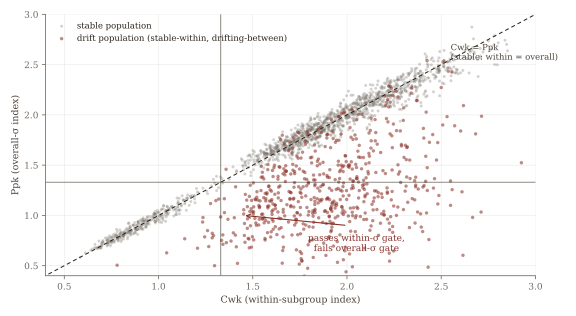
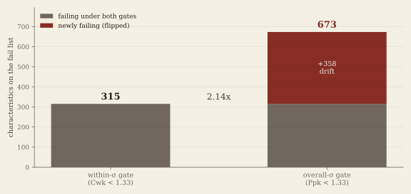
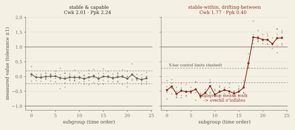
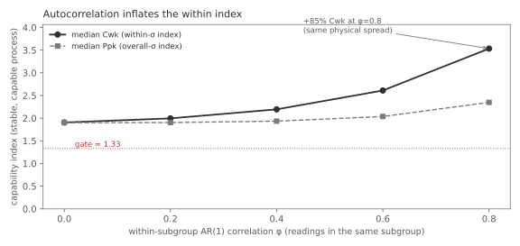
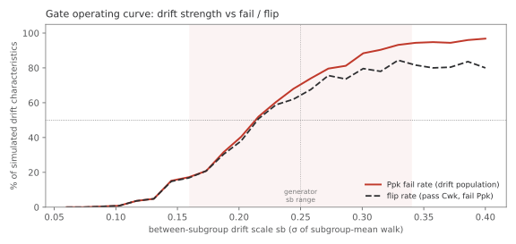
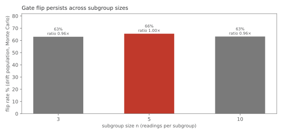

An SPC platform monitoring ~15,000 measured characteristics computed every capability index correctly and still told the wrong story. The arithmetic was never the bug: the choice of which variation the number is allowed to see was. This is a study in preferring the answer that generates more work.
By a process engineer (SPC) in a semiconductor assembly & test (OSAT) production environment. The phenomenon is real; the numbers on this page come from a simulated dataset that reproduces it: no real measurements, part numbers, product names, or customer names. The method is the point, and every figure below regenerates from the committed generator and notebook.
The platform monitored roughly 15,000 measured characteristics across the line, each with a capability index computed to standard and classified pass/fail against the usual 1.33 target. The math checked out on audit. But the classification gate ran on the within-subgroup sigma (the spread inside each subgroup of five) and that estimate cannot see a process whose subgroups are individually tight while their means drift over the run. A characteristic could look capable on the gate and still ship parts across the whole tolerance. To show the mechanism at reproducible scale, everything below runs on a simulated dataset of 2,000 characteristics (25 subgroups × n = 5, tolerance normalised to ±1) engineered to reproduce that exact population.
Two estimates of the standard deviation come from the same 125 readings. σ within (R̄/d₂, cross-checked against pooled s/c₄) sees only the tightness inside each subgroup. σ overall (the total sample standard deviation) sees that and the walk of the subgroup means over time. Walk one drifting characteristic through and the gap is stark: σ within stays small, σ overall blows out, so Cwk stays healthy while Ppk collapses below the gate.
| One drifting characteristic (#208) | Value | Reads as |
|---|---|---|
| σ within: R̄/d₂ (pooled s/c₄ agrees) | 0.181 (0.200) | tight subgroups |
| σ overall: total sample sd | 0.812 | 4.5× wider |
| Cwk: within-subgroup index | 1.77 | "capable", passes 1.33 |
| Ppk: overall-σ index | 0.40 | fails 1.33 badly |
| X-bar stability test (A₂R̄) | UNSTABLE | subgroup means drift |
One characteristic is a story; 2,000 show a structure. Plot Cwk against Ppk for every characteristic and most sit on the diagonal: stable processes, where within ≈ overall. But a whole cloud sits below the diagonal: healthy Cwk, sunk Ppk. That off-diagonal cloud is the drift population: 600 characteristics with median Cwk 1.90 but median Ppk 1.20. The gate you choose decides whether you ever see them.

The operational question is a counting exercise: run the pass/fail gate on the within index, then on the overall index, and tally the fail list each way. Nothing about the data changes: only which sigma the classifier is allowed to see. The list roughly doubles.
| Classification gate (same data, same 1.33 target) | Fail list | % of 2,000 |
|---|---|---|
| within-σ gate: Cwk < 1.33 | 315 | 15.8% |
| overall-σ gate: Ppk < 1.33 | 673 | 33.7% (2.14×) |
| newly failing (flipped: pass within, fail overall) | 361 | 21.4% of within-passers |
| production, same rebase | 2,051 → 4,094 | ≈ 2.0× |

The extra red is neither noise nor double-counting. All 361 newly-failing characteristics passed the within gate and failed the overall gate, and cross-tabulated against the ground-truth simulation label they are 100% the drift population: stable-looking subgroups hiding real between-subgroup movement. And the flip is independently corroborated: 90% of the drift population is flagged UNSTABLE by an X-bar mean test that never touches the capability gate. The within gate wasn't being conservative; it was blind to exactly the variation the customer feels.
Side by side: a stable-and-capable characteristic (Cwk 2.01, Ppk 2.24; within and overall agree) against the drifter from §2 (Cwk 1.77, Ppk 0.40). Same tolerance, same subgroup size. The drifter's readings are tight within each subgroup (that is what keeps Cwk high) but the subgroup means walk across the run, and the overall sigma is the only estimate that counts that walk as variation.

Everything above assumes readings inside a subgroup are independent. On a real line they often are not: consecutive measurements in the same subgroup can be serially correlated (fixture settling, shared chuck, sampling cadence). That correlation does not change the physical spread the customer receives, but it does shrink the within-subgroup range R̄ — so R̄/d₂ underestimates σ within and inflates Cwk while Ppk (total sample σ) barely moves.
Hold the process stable and capable (σ within ≈ 0.17) and sweep within-subgroup AR(1) correlation φ from 0 to 0.8 across 400 Monte Carlo replicates per level. Median Cwk rises from 1.91 to 3.53 (+85.5% at φ = 0.8); median Ppk moves only 1.90 → 2.35. A gate running on Cwk would read "capable" on autocorrelated noise that Ppk still sees honestly. That is a second reason the overall index belongs on the classification gate — not just drift, but any mechanism that makes within-subgroup spread look tighter than the run actually is.

The 2.14× headline comes from one committed generator with a fixed drift scale. A separate question is operating-characteristic: for a pure drift population (tight subgroups, walking means), what fraction fails Ppk — and what fraction flips (pass Cwk, fail Ppk) — as the between-subgroup walk scale sb increases?
Sweep sb from 0.06 to 0.40 on 250 replicates per grid point. Both the overall-fail and flip curves cross 50% near sb ≈ 0.22. The shaded band is the sb range baked into the generator (~0.16–0.34): the committed mix sits squarely in the region where a within gate routinely passes what an overall gate would fail.

The committed dataset uses n = 5 (AIAG default). Smaller subgroups widen X-bar limits and shrink R̄/d₂ — does the within-vs-overall flip depend on that choice? Hold the pure drift population (sb = 0.25, K = 25 subgroups) and re-run the gate at n = 3, 5, and 10 with the correct d₂ and A₂ for each size.
Flip rate and Ppk-fail rate stay in a narrow band (~63–69%) across all three sizes — within 4% of the n = 5 headline. The 2.14× ratio is not an artifact of picking five.

The point of the rebase is what it changed operationally. Because of it:
A shorter fail list would have been more comfortable. A capability report that tells the customer's truth is worth more.